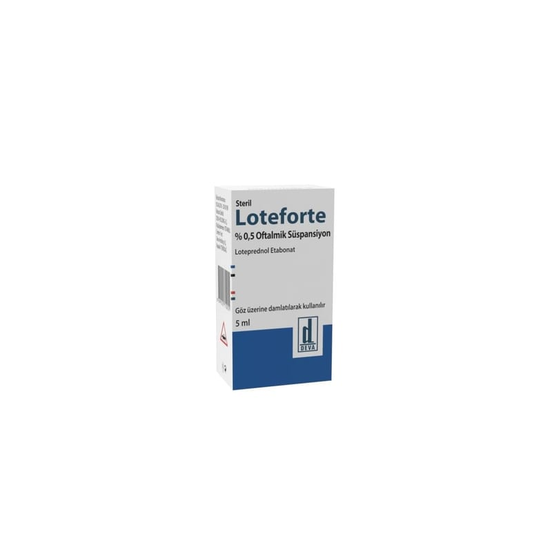

Loteforte % 0,5 Oftalmik Süspansiyon, 1 Adet

Ne için kullanılır
KT · Bölüm 1LOTEFORTE, kortikosteroidler adı verilen bir ilaç grubuna aittir.
Beyaz-kirli beyaz renkte süspansiyon içeren 5 ml’lik opak, beyaz renkli, damlalıklı, düşük yoğunluklu polietilen şişelerde sunulur.
Gözde çeşitli uyaranlar ile ortaya çıkan iltihabı (kızarıklık, ağrı, şişkinlik, kaşıntı vb.) ortadan kaldırmaktadır. Bu amaçla; Gözdeki çeşitli yapıların alerjik ve iltihabi hastalıklarının tedavisinde kullanılır. Ayrıca, göz cerrahisini takiben ameliyat sonrası oluşan iltihabın tedavisinde de kullanılır.